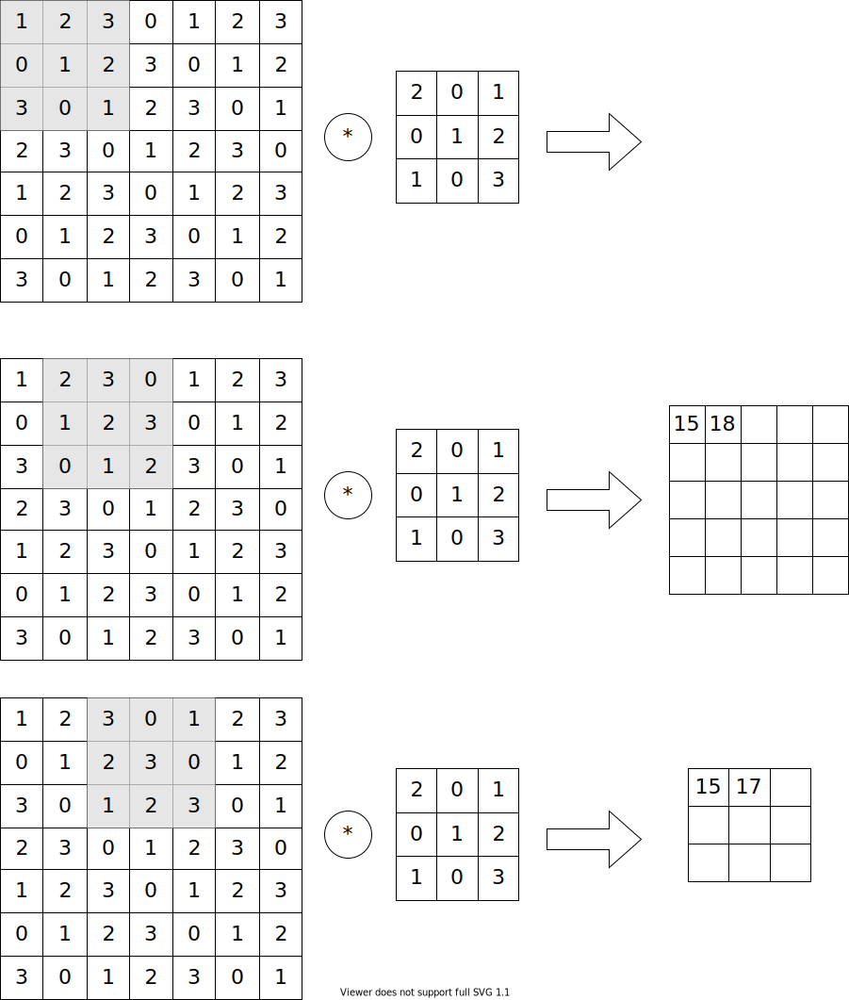

8.2. 畳み込み層¶
全結合層の問題点は、データの形状が無視されること
例えば画像の場合、縦、横、チャンネル(RGB)の3次元の形状を持っているが、全結合層に入力する際には、データを1次元にする必要がある。 (MNISTデータの場合は、1ピクセルずつを左上から？順に入れてましたね)
そのため、例えば隣接するピクセルについての情報をくみ取ることが難しい。
畳み込み層の場合は3次元のデータとしての形状を維持しながら、ニューロン間のデータの受け渡しをすることができる。
CNNでは、入力データを「入力特徴マップ (input feature map)」、出力データを「出力特徴マップ (output feature map)」と言い、合わせて「特徴マップ (feature map)」という場合がある。
8.2.1. 畳み込み演算¶
畳み込み演算は、入力データに対してフィルターのウィンドウを一定の間隔でスライドさせながら適用していきます。ここでは縦、横を持つ2次元のデータで見てきましょう。

フィルターの要素と入力の要素を乗算し、その和を入れる。 この計算を積和演算という。
CNNの場合、「重み」はフィルターのパラメータです。「バイアス」もあります。
バイアスはフィルターで計算した後に、各マス目に加算します。
8.2.2. パディング¶
次の畳み込み層の処理を行う前に、入力データの周囲に固定のデータを埋める。これを「パディング (padding)」という。
パディングによって、次の計算の出力サイズを調整します。
畳み込み演算は何度も行うと、出力サイズはどんどん小さくなり、最終的な出力サイズが1になってしまうかもしれません。この事態を回避するためにも、パディングを使います。
8.2.3. ストライド¶
フィルターを適用する位置の間隔を ストライド といいます。
7×7の画像に対し、3×3のフィルターを1ピクセル毎に計算した場合、ストライドは1、出力は5×5になります
ストライドが2になると、7×7の画像の出力は3×3になります。
入力サイズ、フィルターサイズ、パディング、ストライドから、出力サイズを計算する式は以下です:
入力サイズを(H, W), フィルターサイズを(FH, FW), パディングをP, ストライドをS とすると、出力サイズを(OW, OH)は
[2]:
H = 7
W = 7
FH = 3
FW = 3
P = 0
S = 1
OH = (H + 2*P - FH) / S + 1
OW = (W + 2*P - FW) / S + 1
print(f"OH = {OH}")
print(f"OW = {OW}")
OH = 5.0
OW = 5.0
[3]:
H = 7
W = 7
FH = 3
FW = 3
P = 0
S = 2
OH = (H + 2*P - FH) / S + 1
OW = (W + 2*P - FW) / S + 1
print(f"OH = {OH}")
print(f"OW = {OW}")
OH = 3.0
OW = 3.0
ただし、大きさやストライドなどによっては、出力結果が小数点になってしまうこともある
[5]:
H = 7
W = 7
FH = 3
FW = 3
P = 0
S = 3
OH = (H + 2*P - FH) / S + 1
OW = (W + 2*P - FW) / S + 1
print(f"OH = {OH}")
print(f"OW = {OW}")
OH = 2.333333333333333
OW = 2.333333333333333
そのため、小数点以下が出てしまっている場合はエラーを出す、などの対策が必要です
8.2.4. 3次元データの畳み込み演算¶
3次元データの畳み込み演算は、直方体のブロックで考えるとわかりやすいです。
例えば、チャンネル数をC, 高さをH、横幅をWのデータは (C, H, W)と表現することができます。
同様に、フィルターも(C, FH, FW)と書くことができます。フィルターのチャンネルは入力データの大きさと同一にする必要があるため、FCと表現しません。
しかし出力結果がチャンネル方向にも持つ場合は、どうすればよいでしょうか？
答えは、フィルターを増やすことです。(C, FH, FW)のフィルターをFN個増やすと、出力データにもFN個チャンネルを持たせることができます (FN, OH, OW)。
ここまでが、畳み込み演算による重み(フィルター)の計算でした。畳み込み演算にはバイアスも存在します。
バイアスはチャンネル数の数だけ存在します(FN, 1, 1)。畳み込み演算の結果(FN, OH, OW)に対して加算します。
8.2.5. 畳み込み演算のバッチ処理¶
畳み込み演算も、バッチ処理ができます。
バッチ処理を行う場合、C, H, Wの3次元データから、N個という4次元のデータとして計算します。
N個の入力データはそのまま、N個の出力データとなりますが、計算回数は1回になります。